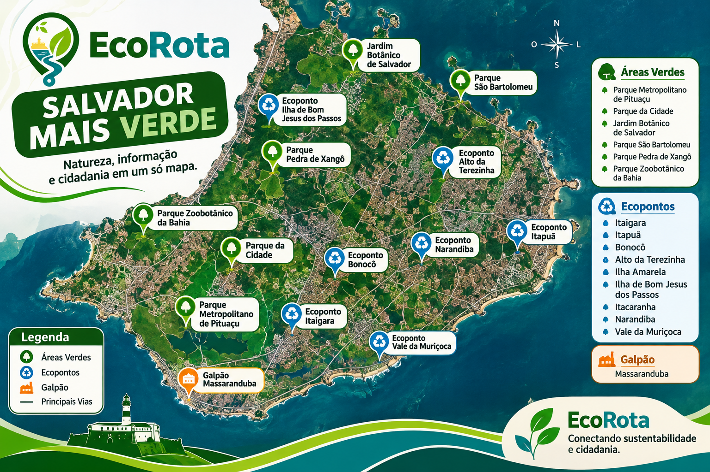

Parque Metropolitano
de Pituaçu
Um olhar de perto sobre o parque e os registros da visita de campo realizada pelo grupo.
UM OLHAR AMBIENTAL SOBRE SALVADOR
Mapas para descobrir áreas verdes, compreender o espaço urbano e encontrar informações ambientais em Salvador.

O EcoRota — Mapa Verde: Conectando Sustentabilidade e Cidadania é uma iniciativa de extensão que propõe organizar e tornar mais acessíveis informações ambientais de Salvador. A proposta conecta pesquisa, observação do território e comunicação.
Um mapa não é apenas um desenho. É uma forma de tornar o território mais compreensível.
Escolha um dos mapas para ampliar a leitura do território. Cada material tem um propósito e uma escala diferente.
Um olhar de perto sobre o parque e os registros da visita de campo realizada pelo grupo.
Visão geral com os locais identificados no levantamento: áreas verdes, ecopontos e galpão.
Pesquise locais, filtre por categoria e consulte os detalhes disponíveis em cada marcador.
i Os mapas estáticos são materiais temáticos. As posições do mapa interativo são referências preliminares e não devem ser usadas como navegação precisa antes da validação dos acessos.
Os dados reunidos vêm dos documentos do projeto e de levantamentos complementares. Endereços, horários e coordenadas podem exigir confirmação junto aos responsáveis pelos equipamentos. Por isso, o site diferencia informação documentada de localização ainda aproximada.
Entenda os critérios do mapa ↗ECOROTA · MAPA VERDE